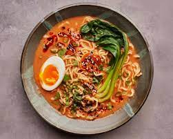

Radical Ramen
Odin Recipes

Description
Ramen is a staple dish for the people of japan, as well as college students across the globe. Its ubiquity has exploded overthe past decades due to the instant variet. However, this recipe will blow any cup of noodles out of the water.
Vegetarian Ramen is a tad bit tricker to make because of the broth. In traditional ramen, tonkotsu broth is used as a base. However, this is a meat derived broth, so we'll have to find an appropriate substitute. Luckily, Tomato paste, dried shiitake mushrooms, kombu, and a bit of butter are able to come together to give a rich umami-like taste to the dish.
Ingredients
- Garlic cloves - 4, thinly sliced
- Vegetable Oil - 1/4 cup and 2 Tsbps
- Sesame Seeds - 1 Tbsp
- Gochugaru (Korean red pepper powder) - 1 Tbsp
- Kosher Salt - as much as you want
- Scallions - 4
- Ginger - 2" peeled, thinly sliced pieces
- Tomato Paste - 2 Tbsp
- Shiitake mushrooms - 8
- Dried Kombu - 4x3" piece
- Unsalted Butter - 3 Tbsps, cut up
- Low-Sodium Soy Sauce - 1 Tbsp
- Baby Bok Choy - 12 oz.
- Fresh Ramen Noodles - 5 oz.
Directions
- Cook garlic and ¼ cup oil in a medium pot over medium heat, stirring often, until garlic is beginning to turn golden, about 3 minutes. Stir in sesame seeds and cook, stirring occasionally, until garlic is golden brown and crisp, about 1 minute. Transfer mixture to a small bowl and stir in gochugaru; season with salt. Set garlic oil aside. Wipe out pot and set aside.
- Trim dark green parts from scallions and thinly slice; set aside for serving. Coarsely chop white and pale green parts. Heat remaining 2 Tbsp oil in reserved pot over medium-high. Cook chopped scallions and ginger, stirring often, until scallions are charred in spots, about 4 minutes. Add tomato paste and cook, stirring occasionally, until it begins to stick to the bottom of pot and darkens slightly, about 2 minutes. Add mushrooms and kombu, then stir in 5 cups cold water. Bring to a boil, then remove from heat and let sit until mushrooms soften, about 10 minutes. Remove and discard kombu.
- Using a slotted spoon, transfer solids to a blender. Add a ladleful or 2 of broth to blender and purée until smooth. Stir purée back into broth in pot and bring to a simmer over medium heat. Add butter a piece at a time, whisking to combine after each addition before adding more. Stir in soy sauce; season with salt. Reduce heat to low and keep warm until ready to serve.
- Meanwhile, bring a large pot of water to a boil. Add bok choy and cook until bright green and tender, about 2 minutes. Using a slotted spoon, transfer bok choy to a plate. Return water to a boil and cook noodles according to package directions. Drain and divide among bowls.
- To serve, ladle broth over noodles, then top with bok choy and reserved garlic oil. Top with eggs, nori, and cilantro if desired.